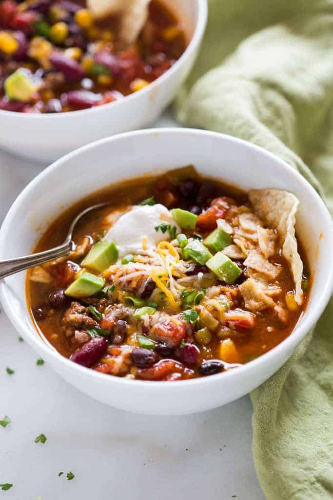

Taco Soup Recipe
Description
This easy Taco Soup recipe is one of my favorite meals when I want something healthy, quick, and tasty. This one-pot meal can also be made in the Crock Pot or Instant Pot!

Ingredients
- 1 pound lean ground beef
- 4 cloves garlic , minced (or substitute 1 teaspoon garlic powder)
- 2 teaspoons chili powder
- 1 teaspoon cumin
- 1 teaspoon salt
- 1/2 teaspoon dried oregano leaves
- 1/2 teaspoon paprika
- 1/2 teaspoon onion powder
- 1/2 teaspoon freshly ground black pepper
- 28 ounce can crushed tomatoes undrained
- 4 ounce can diced green chiles
- 15 ounce can kidney beans rinsed and drained
- 15 ounce can black beans , rinsed and drained
- 2 cups low-sodium beef broth
- 17 ounce can corn , drained
Instructions
- Heat a large soup pot over medium heat. Brown the meat and remove any grease, if needed. Add remaining ingredients and stir to combine.
- Bring to a low boil, then reduce heat and simmer for 20 minutes before serving. Garnish with desired toppings.